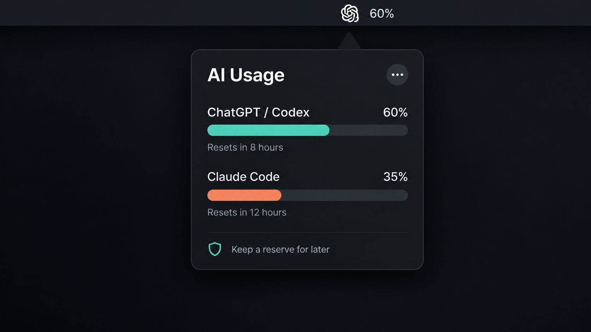

ChatGPT & Codex
Track the current Codex window and weekly allowance through the installed ChatGPT app.
Scripts/install.sh chatgptOpen source · macOS 13+
AI Usage Widgets puts ChatGPT, Codex, and Claude Code usage percentages, reset times, and local pacing guidance in your Mac menu bar.

Track the current Codex window and weekly allowance through the installed ChatGPT app.
Scripts/install.sh chatgptTrack Claude subscription usage locally. This integration is experimental because the usage endpoint is undocumented.
Scripts/install.sh claudeRun both trackers to see fresh, local pacing advice that preserves a session and weekly reserve.
Scripts/install.sh bothChatGPT and Codex usage tracker for Mac · Claude Code usage tracker for Mac